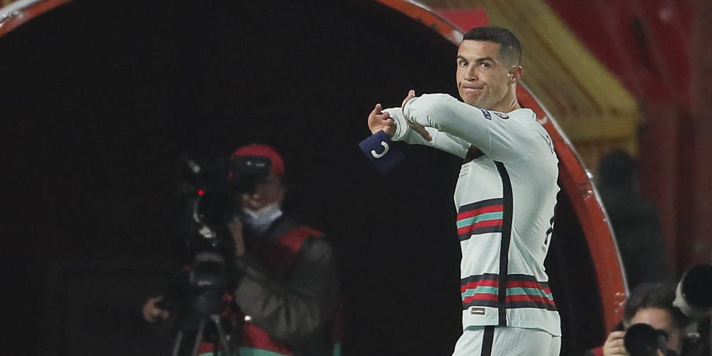

'Always Chasing the Ref' — The Complaining Captain
Addicted to flinging arms: Real, Juve, United, Al Nassr — wherever he goes, the constant is the arms-flung-out: a teammate misplaces a pass, fling; he skies a shot, fling; the referee waves play on, fling. Seven or eight times a game; his body language is more prolific than his goals.
Chasing the referee: Whenever a controversial call goes against him, Ronaldo is instantly in pursuit to demand an explanation. After a Saudi league match in January 2026 he narrowly escaped a four-match ban for over-aggressive gesturing at the officials; Marca's verdict: 'completely exploding afterwards'.
Throwing the armband like trash: The classic 'complaint moment' came in the 2021 Serbia qualifier: goal disallowed, Ronaldo slammed the armband down and stormed off — criticised post-match for having 'zero captain's dignity'. Far from an isolated case: after defeats he has discarded the armband multiple times, mocked as 'unfit to be captain'.
Public pressure on teammates: Cameras have repeatedly caught Ronaldo publicly dressing down teammates on the pitch: fist-shaking, head-shaking, shouting. After one match he walked off scowling because a teammate failed to pass to him — accused of treating teammates as tools.
The audacity to shove a referee: According to Arab News, Ronaldo once shoved and bellowed at the on-pitch referee in a Saudi league match, with home fans loudly chanting 'Messi' to taunt him. Shoving a referee is a grave offence in any league, yet he escaped. Repeatedly.
The price of obscene gestures: For making a provocative gesture at fans, Ronaldo was banned one match by the Saudi FA. He called it a 'misunderstanding' afterwards; officials ruled his behaviour improper, and the punishment stood — the culture of complaint finally catching up with him.
The eternal 'innocent' self-image: In Ronaldo's worldview the wrongdoer is always someone else: the referee unfair, the teammates not good enough, the coach clueless, the media biased. This eternal-victim mentality takes him further and further from 'leadership', leaving only the silhouette of an angry, lonely superstar.